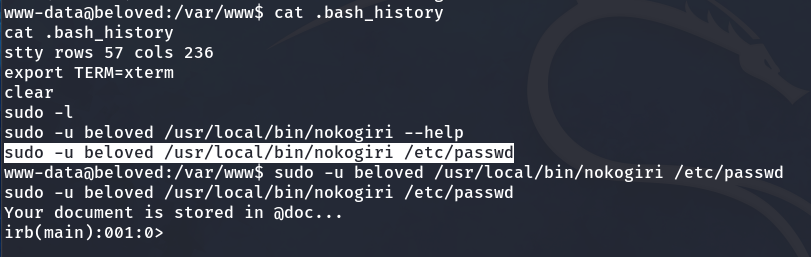

We find the victim machine’s IP address using the arp-scan tool, looking for a MAC address starting with 08:, which is typical for virtual machines.
Next, we run an NMAP scan to identify open ports.

As a result, we observed that ports 22 (SSH) and 80 (HTTP) are open. Inside the web, we can see the following.
If we click on any link, we notice that it doesn’t load because it’s a domain that our local machine is not aware of.
Our machine is not aware of that domain
So, we are going to edit the /etc/hosts file and add this domain with its corresponding IP:
sudo nano /etc/hosts
Now, upon entering the victim machine’s IP address again in Firefox, we see a website with an improved appearance.
Clicking on “Hello world!” we encounter a user and a comment.
User
Comment
As we have seen earlier, the website is built with WordPress. So, let’s use the wpscan tool to gather more information. Using this tool, we can confirm the existence of the user ‘smart_ass’.
Enumerating users:
wpscan --url http://beloved/ -e u
Result of user enumeration
Now, with the following command, we will enumerate the WordPress plugins used by this website:
wpscan --url http://beloved/ --plugins-detection aggressive -t 50 --api-token='YOUR_API'
üìù NOTE: To get the API key, you must register at wpscan.com
As a result, we can observe a plugin called wpDiscuz with an old version that is vulnerable.
I go to Metasploit and find that it has an exploit that we can use for RCE (Remote Code Execution).
Exploit
Setting up the options
And we execute it with the run or exploit command, and now we would be inside:
We use the ‘shell’ command to spawn a shell and then configure the TTY.
Privilege escalation to beloved
When navigating to the /var/www directory, we can access the .bash_history file and review some executed commands.
Later, after running sudo -l, we see that we are allowed to execute the nokogiri binary as the user beloved.
So, I decide to copy and execute the command I saw in the bash_history, and an Interactive Ruby (IRB) session opens.

In an Interactive Ruby session
So, we can execute commands with the following structure:
system 'COMMAND'
So, I run a command to spawn a shell as beloved, and just like that, we become the beloved user.
system '/bin/bash'
And we can obtain the user flag.
Privilege escalation to root
For the next privilege escalation, we will use pspy, which is a program that monitors the processes occurring on the machine.
Now, let’s transfer pspy64 from our local machine to the victim machine by creating a web server with Python on port 8080.
We grant permissions with ‘chmod +x pspy64’ and run it with ‘./pspy64’.
chmod +x pspy64
./pspy64

We notice that a command is executed every minute.
The chown command changes the owner and group of files or directories. In this case, it is applied to everything inside the /opt directory. Inside /opt, we found the root user’s id_rsa file (a private SSH key) and since we have write permissions in this directory, it could be exploited.
Now, we will exploit chown to change the owner of the root’s id_rsa to beloved. (Link where it explains how to exploit this vulnerability: Wildcard Injection)
We can do it by executing the following commands in /opt:
touch reference
touch -- --reference=reference
After waiting a minute, we will see that the id_rsa file becomes owned by us. In case the id_rsa is not in that directory but, for example, in /root/.ssh/id_rsa, we should create a symbolic link pointing to it like this:
ln -s /root/.ssh/id_rsa id_rsa
With this approach, we can obtain any file owned by root without any issues. But since we already have the root’s id_rsa, we don’t need anything else.
The root's id_rsa is now under our ownership
We copy the contents of the id_rsa file and save it to our local machine. Next, we escalate privileges by running:
chmod 600 id_rsa
And we log in via SSH using the root user and this id_rsa, like this:
ssh -i id_rsa root@IP
Finally, we obtain the root flag.